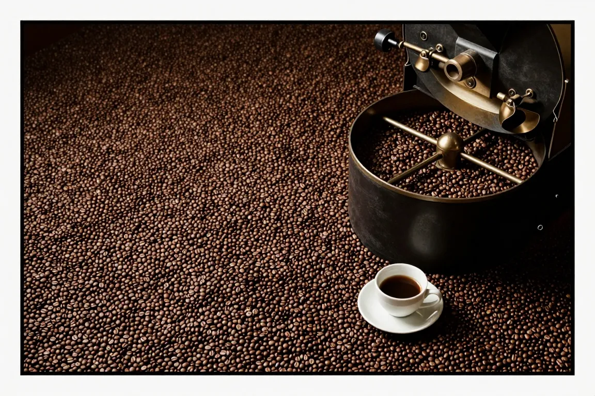

nett · 2010–now · også: Filterutseende, Valencia og X-Pro II, Kvadratisk retrofoto
Et mobilfoto i et kvadratisk 1:1-utsnitt med et filter med ett trykk: varm falming, løftede svartnivåer, en mørk vignett og en tykk hvit kant. Det fikk et mobilbilde til å ligne et gammelt papirbilde.

Kjerneidé
Ett trykk gjør et vanlig mobilbilde til et minne: filteret, rammen og vignetten gir den alderen bildet ikke har.
Designprinsipper
Beskjær hvert foto til et 1:1-kvadrat og vis det i full bredde, 640px i de første appene.
Fal svartnivåene til 10 % til 15 % grått og skyv høylysene mot rav (#E8B866) ved 20 % til 30 % styrke.
Legg til en vignett: en radiell mørk kant fra 55 % radius og ut til 100 %, ved 35 % til 55 % dekning.
Legg en hvit kant på 24px til 40px rundt bildet, med en tykkere nedre kant på 64px til bildeteksten.
Tilby 15 til 18 navngitte filtre i en stripe av miniatyrer på 80px, hver med et navn på ett ord i versaler.
Sett bildeteksten i en enkel grotesk på 14px med brukernavnet i fet, og hold grensesnittet flatt.
Vis en hårstrek på 1px mellom fotokortene i strømmen og en fanelinje på 44px med 5 ikon.